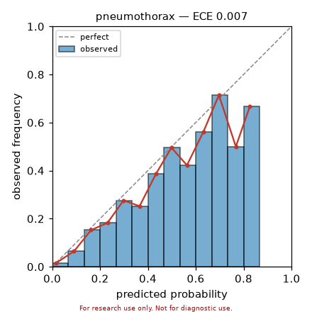
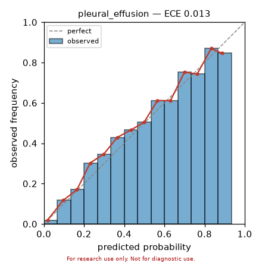
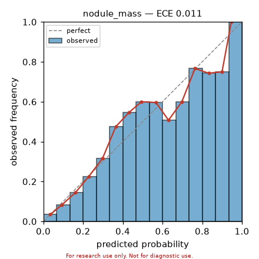
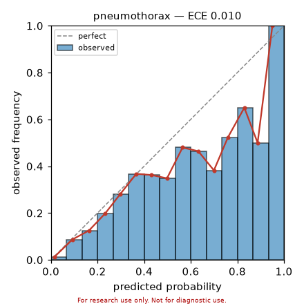
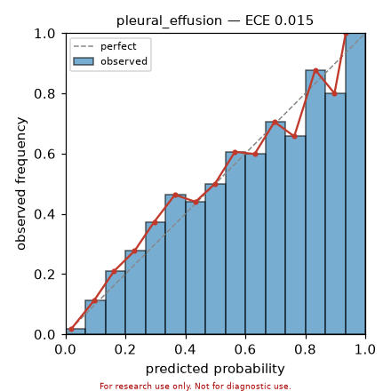
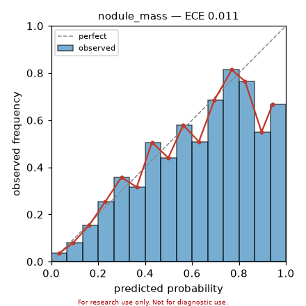

An AI second reader for chest radiographs — built to catch missed findings and to say how sure it is.
Second Reader is a research prototype. It gives a clinician a second look at an adult frontal chest radiograph after they have recorded their own read, shows a calibrated probability and a heat-map for each of three findings, and declines to answer when the image is outside what it was built for. It supports the clinician's decision; it never makes it.
Status. This is a research prototype, not a cleared or approved medical device. It has not been submitted to, cleared by, or approved by the FDA, a European notified body, or any other regulator. No clinical performance claim is made. The numbers on this page are internal-test results on one public dataset and must not be read as evidence of clinical performance.
The problem: findings that are visible but not seen
Radiology's day-to-day discrepancy rate is commonly estimated at 3–5% of reported studies, with higher rates in targeted reviews1. Most of the errors that matter on a chest radiograph are perceptual: the abnormality is on the film and is simply not seen. The overall prevalence of interpretive error, as Bruno and colleagues note, "does not appear to have changed" since it was first measured in the 1960s2. A miss on one film also tends to be repeated on the next: Kim and Mansfield's review of 656 delayed-diagnosis cases found that errors are often perpetuated across follow-up examinations3.
The consequences are largest for pulmonary nodules. In Quekel et al.'s series of 396 lung-cancer patients, 19% of cancers presenting as a nodule were missed on the chest radiograph; the median missed lesion was 16 mm, the median diagnostic delay was 472 days, and 43% of the missed tumours had moved from T1 to T2 by the time they were found4. In a 2,407-radiograph audit across eight sites in India and the US, missed findings were present in 14.2% of films, and pulmonary nodules made up 43.1% of the clinically important misses5. Unaided readers in an enriched reader study reached a sensitivity of 0.567 for nodules, 0.792 for pneumothorax and 0.889 for pleural effusion6.
This happens against a shrinking margin of attention. Radiologist attrition in the US more than doubled between 2014 and 2022 (1.1% to 2.5%)7; supply and imaging demand are projected to grow at similar rates to 2055 (supply +25.7%, demand +16.9% to +26.9%), so the present shortage is projected to persist8. In the UK, the Royal College of Radiologists' 2024 census reports a 29% consultant shortfall, rising to 39% by 20299.
What the evidence does not support. The largest randomised trial of chest X-ray AI to date (LungIMPACT, 93,326 radiographs across NHS sites) found no reduction in time to CT or to lung-cancer diagnosis from AI worklist prioritisation10. Second Reader therefore does not claim to speed up diagnosis or to triage. It is positioned only as a safety net for perceptual misses, and even that claim is unproven until an external, multi-site validation and a reader study exist (see Roadmap).
Sources
- Brady AP. Error and discrepancy in radiology: inevitable or avoidable? Insights Imaging 2017;8:171–182. link
- Bruno MA, Walker EA, Abujudeh HH. Understanding and confronting our mistakes: the epidemiology of error in radiology. RadioGraphics 2015;35:1668–1676. link
- Kim YW, Mansfield LT. Fool me twice: delayed diagnoses in radiology with emphasis on perpetuated errors. AJR 2014;202:465–470. link
- Quekel LG et al. Miss rate of lung cancer on the chest radiograph in clinical practice. Chest 1999;115:720–724. link
- Kaviani P et al. Frequency of missed findings on chest radiographs (CXRs) in an international, multicenter study. Diagnostics 2022;12:2382. link
- Ahn JS et al. Association of artificial intelligence-aided chest radiograph interpretation with reader performance and efficiency. JAMA Netw Open 2022;5:e2229289. link
- ACR Bulletin, "The radiologist shortage: a workforce update from HPI" (2026), citing Neiman HPI attrition analysis (AJR 2025). link
- Neiman Health Policy Institute, press release on radiologist supply and imaging demand projections to 2055 (two JACR papers), 2025-02-12. link
- Royal College of Radiologists, 2024 clinical radiology workforce census. link
- Woznitza N et al. LungIMPACT randomised trial of AI prioritisation of chest radiographs. Nat Med 2026;32:1737–1744. link
What Second Reader does — and does not do
Second Reader is software for qualified clinicians to use as a concurrent or second read on adult frontal (PA or AP) chest radiographs. For each eligible image it reports, for pneumothorax, pleural effusion and pulmonary nodule/mass, a calibrated probability, a heat-map and bounding box, and a flag at a stated operating point. The design choices below are the project's non-negotiables; each one exists to keep the clinician in charge.
It does
- Second read, not first read. It is an additional pair of eyes on a study a clinician is already reading. It does not replace the read, and it is not for unattended or automated workflows.
- Read-first mode. The AI output is withheld until the clinician has recorded their own impression. This is enforced on the server, not just in the interface, to limit automation bias.
- Calibrated probabilities. Each finding is reported as a probability that has been calibrated on held-out data (Platt scaling), together with the operating threshold. A finding is never shown without its probability and its heat-map.
- "Unable to assess." A quality, view and out-of-distribution gate runs before the model. Lateral views, non-chest images, multi-frame objects, blank or saturated pixels, and inputs far from the training distribution are returned as
unable_to_assesswith a reason, rather than guessed at. - Per-subgroup reporting. Every evaluation reports metrics with bootstrap confidence intervals overall and by data source, vendor, age band, sex and view (AP vs PA). A report without subgroup tables is considered invalid.
- Standards-based output. DICOM in; DICOM Structured Report (TID 1500, SNOMED CT finding codes), DICOM Secondary Capture overlays with the research-use banner burned in, and JSON out. Tested with Orthanc and the OHIF viewer; no custom viewer.
- De-identification first. Studies are de-identified (allowlist profile, HMAC pseudonyms, burned-in text quarantine, independent verifier that fails closed) before anything is stored. Nothing identifiable crosses into platform storage. Blobs are encrypted at rest; every view, reveal and download is audit-logged.
- Priors side by side. Studies are linked to a pseudonymised patient so earlier films can be displayed next to the current one.
- Traceability. Every model, data split and configuration is versioned by content hash; every prediction records the model version and input hash.
It does not
- Diagnose, triage, prioritise, or alter the standard of care. The clinician's interpretation is the read of record.
- Provide a "normal" read. It looks for three findings only. Absence of a flag is not a normal chest radiograph.
- Size or characterise lesions. Nodule and mass are a single merged target; localisation is a coarse Grad-CAM heat-map, not a segmentation.
- Compare with priors itself. Priors are displayed side by side; the model does not reason across them.
- Handle paediatric, lateral, or non-chest images. These are out of scope and are meant to be gated out. The paediatric gate is not yet validated.
- Accept uploads from this website. This page is informational only. There is no demo, no upload, and no account.
- Claim clinical performance. The prototype has not been validated on any external site and has not been through a reader study. It is not a cleared or approved medical device.
Architecture
The platform sits behind a hospital's PACS. Identifiable data lives only in the hospital archive; the platform receives a copy, de-identifies and verifies it, stores it encrypted, and runs inference through a modality plugin that gates before it predicts. Results go back as standard DICOM objects that any viewer can show.
The diagram in words
- A modality (or a test sender) stores a DICOM study into Orthanc A, a simulated hospital PACS that holds identifiable data.
- When the study is stable, an Orthanc Python plugin calls a webhook; the platform pulls the study over REST.
- De-identification applies a DICOM PS3.15-style allowlist, replaces identifiers with HMAC pseudonyms, and quarantines images with burned-in text.
- An independent PHI verifier re-checks the result and fails closed: anything suspicious is rejected, not stored.
- Verified studies go to an encrypted blob store, PostgreSQL metadata (pseudonymised patient, prior-study links, audit log) and Orthanc B, the de-identified archive.
- A job queue feeds an inference worker, which loads the modality plugin (chest X-ray today; the core is modality-agnostic).
- The quality / view / OOD gate runs first. It returns unable to assess for wrong views, non-chest images, bad pixels, or out-of-distribution inputs.
- Otherwise the calibrated model (DenseNet-121, Platt-scaled probabilities, Grad-CAM saliency) predicts three findings.
- The results writer emits JSON, a DICOM Structured Report (TID 1500) and Secondary Capture overlays, each carrying the research-use banner, back to Orthanc B and the database.
- The OHIF viewer and the read-first review UI show the study, priors and (after the clinician's own read) the AI output; clinician agree/disagree feedback and input/output drift are logged for monitoring.
Current results
Internal test, NIH ChestX-ray14, held-out patients; no external-site validation yet.
Two models have been trained so far, both DenseNet-121 classifiers trained only on the NIH ChestX-ray14 training tier, with patient-level hashed splits (80 / 10 / 10 per source), Platt-scaled calibration and Youden operating thresholds fitted on the internal validation tier. The test tier is in-distribution: same dataset, same site, different patients. These numbers say how the models behave on data like their training data. They say nothing about a new hospital, scanner, or population, which is where the published literature shows the largest drops. Labels in NIH ChestX-ray14 are NLP-mined from reports and are noisy.
Metrics are AUROC with bootstrap 95% confidence intervals (200 resamples) and expected calibration error (ECE). The full reports also include sensitivity, specificity, age bands and data-source breakdowns; subgroups with fewer than 100 positives are flagged as unreliable and are not shown here.
| Subgroup (n) | Pneumothorax | Pleural effusion | Nodule / mass |
|---|---|---|---|
| All (11,299) | 0.883 [0.869–0.899]ECE 0.007 · n+ 535 | 0.886 [0.878–0.894]ECE 0.013 · n+ 1,420 | 0.796 [0.784–0.812]ECE 0.011 · n+ 1,135 |
| View: AP (4,446) | 0.863 [0.841–0.886]ECE 0.008 · n+ 208 | 0.848 [0.836–0.860]ECE 0.029 · n+ 731 | 0.739 [0.711–0.764]ECE 0.016 · n+ 384 |
| View: PA (6,853) | 0.895 [0.876–0.914]ECE 0.010 · n+ 327 | 0.905 [0.894–0.916]ECE 0.007 · n+ 689 | 0.826 [0.807–0.842]ECE 0.019 · n+ 751 |
| Sex: female (4,799) | 0.856 [0.829–0.877]ECE 0.013 · n+ 234 | 0.890 [0.877–0.904]ECE 0.022 · n+ 670 | 0.802 [0.779–0.825]ECE 0.012 · n+ 467 |
| Sex: male (6,500) | 0.903 [0.886–0.917]ECE 0.004 · n+ 301 | 0.882 [0.870–0.893]ECE 0.008 · n+ 750 | 0.790 [0.770–0.810]ECE 0.015 · n+ 668 |
Shaded rows mark the subgroups where the gap against their counterpart is largest: AP films (nodule/mass 0.739 vs 0.826 on PA; effusion 0.848 vs 0.905) and female patients on pneumothorax (0.856 vs 0.903). Operating thresholds: pneumothorax 0.040, effusion 0.099, nodule/mass 0.097.
| Subgroup (n) | Pneumothorax | Pleural effusion | Nodule / mass |
|---|---|---|---|
| All (11,264) | 0.878 [0.862–0.893]ECE 0.010 · n+ 521 | 0.889 [0.882–0.897]ECE 0.015 · n+ 1,420 | 0.808 [0.796–0.823]ECE 0.011 · n+ 1,133 |
| View: AP (4,418) | 0.849 [0.818–0.876]ECE 0.008 · n+ 198 | 0.852 [0.840–0.865]ECE 0.026 · n+ 729 | 0.755 [0.726–0.783]ECE 0.020 · n+ 381 |
| View: PA (6,846) | 0.896 [0.875–0.914]ECE 0.013 · n+ 323 | 0.906 [0.892–0.917]ECE 0.012 · n+ 691 | 0.837 [0.822–0.853]ECE 0.018 · n+ 752 |
| Sex: female (4,797) | 0.856 [0.821–0.883]ECE 0.016 · n+ 229 | 0.894 [0.883–0.906]ECE 0.022 · n+ 670 | 0.807 [0.785–0.829]ECE 0.014 · n+ 459 |
| Sex: male (6,467) | 0.893 [0.869–0.914]ECE 0.010 · n+ 292 | 0.884 [0.872–0.895]ECE 0.013 · n+ 750 | 0.808 [0.791–0.825]ECE 0.012 · n+ 674 |
Going from 320 px to 512 px helped nodule/mass modestly (0.796 → 0.808 overall; AP 0.739 → 0.755) and nothing else, at 2.4× the training cost. The AP-vs-PA gap (about 0.08 AUROC on nodule/mass) and the female pneumothorax gap (about 0.04) did not move, so they are not resolution problems. Operating thresholds: pneumothorax 0.047, effusion 0.120, nodule/mass 0.093.
Calibration
Reliability diagrams on the internal test tier. Bars are observed frequency per predicted-probability bin; the dashed diagonal is perfect calibration. Calibration was fitted on the validation tier; it is not expected to hold at a new site without re-calibration.
Model A — 320 px



Model B — 512 px



Split manifest SHA-256 96cda52f…7ff50. Reports generated by the project's evaluation pipeline, which refuses to render a report without subgroup tables. For context only: these overall AUROCs sit in the range published for DenseNet-121 on random patient splits of this dataset; they are not a comparison with any commercial product, whose cleared performance was measured on different, radiologist-labelled data.
Limitations and known failure modes
Limitations
- No external validation. Every number on this page comes from one public dataset, one site, and a random patient split. Performance at a new site, on a new scanner, or in a different population is unknown and is expected to be lower.
- Noisy labels. Training and test labels are NLP-mined from radiology reports, not radiologist-verified; label harmonisation across datasets is approximate.
- Three findings only. Absence of a flag is not a normal read.
- Nodule/mass is a merged target. The model does not size, count, or characterise lesions.
- Coarse localisation. Grad-CAM heat-maps are coarse, sometimes off-target, and are not a segmentation.
- Calibration is site-specific. It was fitted on internal validation data and is not guaranteed elsewhere; ECE must be monitored and re-fitted per site.
- Priors are shown, not analysed.
- Subgroup gaps exist today. AP films score markedly lower than PA on every finding; female patients score lower than male on pneumothorax. Vendor is unavailable in the current data; ages 80+ and under 18 have too few positives to measure.
- Not characterised: latency, throughput, hardware requirements, and the de-identification pipeline's performance against a burned-in-text corpus.
Known failure modes
| Situation | Behaviour |
|---|---|
| Lateral or non-chest image | Gated: unable to assess (header + learned view head) |
| Cine / multi-frame object | Gated |
| Very small, blank, saturated, or extreme-aspect image | Gated (pixel checks) |
| Scanner or protocol shift | Large shifts are gated by the OOD detector; smaller shifts pass through with silently degraded accuracy. Drift monitoring is the backstop. |
| Chest tubes, lines, pacemakers, surgical clips | May cause false positives, especially pneumothorax and nodule |
| Apical pneumothorax on a supine AP film | Reduced sensitivity |
| Subpulmonic effusion | Reduced sensitivity |
| Nipple shadows, bone islands, vessels end-on | Nodule false positives |
| Burned-in text | Quarantined at ingestion by a header check and a pixel heuristic; the heuristic is not OCR and can miss |
| Paediatric image | Out of scope; should be gated by the OOD detector, but this is not yet validated |
Roadmap
The order below follows what the current results and the published evidence say matters most. None of it is scheduled or funded yet; it is the plan, not a promise.
-
Multi-site training data
Add CheXpert and MIMIC-CXR (research-only licences) to the training pool as a research lineage, and keep a separate lineage trained only on commercially licensable data, so the licence gate is exercised from day one. This is the most likely lever on the AP-vs-PA and sex gaps, which resolution did not move.
-
View-aware training
Pass AP/PA as an input to the model and evaluate view-stratified operating points. Independent work attributes 69–87% of chest X-ray model performance variance to radiograph view, and the internal results here agree.
-
Locked external test
Evaluate on datasets from sites never used for training or tuning — VinDr-CXR (Vietnam, radiologist consensus labels with boxes) and the physician-labelled subset of PadChest (Spain, with vendor metadata), with BRAX (Brazil) as an option — locked by manifest hash before training. Internal and external metrics are never averaged.
-
Validation study sized to the evidence bar
Following what cleared chest X-ray CADe devices actually submitted: a consecutive external standalone test of at least 3,000 frontal radiographs from at least 4 institutions in at least 2 countries, with at least 300 positives per finding; subgroup tables with confidence intervals by site, vendor, age, sex, view, portable vs fixed, finding size and co-existing findings; a 2 + 1 radiologist reference standard with paired CT for nodules; and calibration (ECE) reported per site. If a computer-aided detection claim is pursued, a fully crossed multi-reader multi-case study with at least 12 readers and 250 enriched cases, read-first-then-reveal, pre-registered.
-
Human-factors evidence for read-first mode
Test whether withholding the AI output until the clinician has recorded a read actually reduces automation bias, rather than assuming it.
-
Second modality plugin
The core is modality-agnostic (inputs are frames × height × width), so ultrasound cine can be added as a plugin without changing the platform. This is deliberately after the validation work, not before.
Regulatory status
Second Reader is not cleared, approved, or registered as a medical device anywhere, and it is not being used on patients. Software that analyses chest radiographs and marks findings for a clinician would be a computer-aided detection (CADe) device: class II in the US (comparable products have been cleared under 510(k), typically product code MYN, with a standalone performance study plus a multi-reader multi-case study) and at least class IIa under the EU Medical Device Regulation (Rule 11), requiring a notified body. Reaching either would require, beyond the software itself: a quality management system (ISO 13485), a software lifecycle file (IEC 62304), a risk management file (ISO 14971), usability engineering (IEC 62366-1), a cybersecurity file with an SBOM and threat model, documented and licensed multi-site training and test data with a locked independent external test, a clinical evaluation including a reader study, labelling, a change-control plan for model updates, and post-market surveillance. Today the prototype has none of those files. What it does have is the engineering groundwork that makes them tractable: content-hashed model, data-split and configuration versions; a mandatory subgroup evaluation report; a de-identification boundary with an independent verifier; audit logging; and drift and feedback monitoring. The project's own regulatory notes are orientation only, not regulatory advice; any path to a regulated product would be set with qualified regulatory-affairs counsel.
Open datasets and licences
Every dataset the project touches is declared in a registry with its licence text, verification date and a commercial_ok flag. No patient data of any kind is stored in the repository; tests use synthetic DICOM only. To date, exactly one dataset has been used for training and evaluation.
| Dataset | Source | Size | Labels | Licence | Role |
|---|---|---|---|---|---|
| NIH ChestX-ray14 | NIH Clinical Center, USA | 112,120 images, 30,805 patients | NLP-mined from reports (noisy); pneumothorax, effusion, nodule, mass among 14 labels; about 984 radiologist boxes | Unrestricted use per the NIH release FAQ; users must link the download site, acknowledge the NIH Clinical Center and cite Wang et al., CVPR 2017. Verified 2026-09-21. Commercial use permitted. | Training, validation and internal test (patient-level split) |
Acknowledgement: this work uses the ChestX-ray14 dataset provided by the NIH Clinical Center, available at nihcc.app.box.com/v/ChestXray-NIHCC. Wang X, Peng Y, Lu L, Lu Z, Bagheri M, Summers RM. ChestX-ray8: Hospital-scale chest X-ray database and benchmarks on weakly-supervised classification and localization of common thorax diseases. IEEE CVPR 2017.
Declared for planned use, not yet used
The registry also declares CheXpert (Stanford; research-use agreement), MIMIC-CXR, VinDr-CXR and BRAX (PhysioNet credentialed health data licence; research only), PadChest (BIMCV research-use agreement), CANDID-PTX, SIIM-ACR and ChestX-Det (research or competition terms; the last two are derived from NIH images and are therefore never used as external tests), and, as out-of-distribution negatives for the gate, the Kermany paediatric set (CC BY 4.0), the NLM Shenzhen and Montgomery tuberculosis sets, and the Open-i Indiana collection (CC BY-NC-ND 4.0). All except NIH ChestX-ray14 and the Kermany set are research-only licences; a model trained on them could not be commercialised without different data agreements. Licence terms are re-verified at download time.
The project deliberately does not use public chest-X-ray-pretrained weights, because those weights were trained on the very datasets that would serve as external tests.
Contact
Second Reader is an early-stage research project. If you are a clinician, a researcher, or an institution with multi-site, radiologist-labelled chest radiographs and an interest in a locked external validation, a reader study, or the de-identification and review workflow, we would like to hear from you.
Request research collaboration
This site does not accept image uploads, does not offer a demo, and has no login. Please do not send patient data by e-mail.